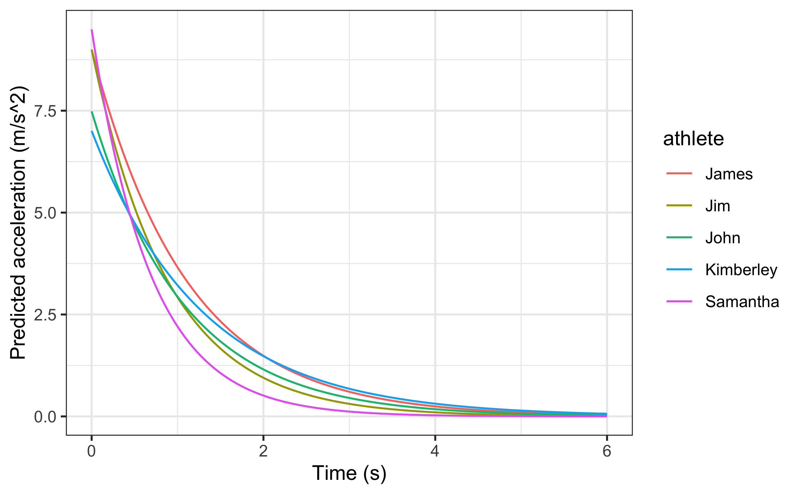
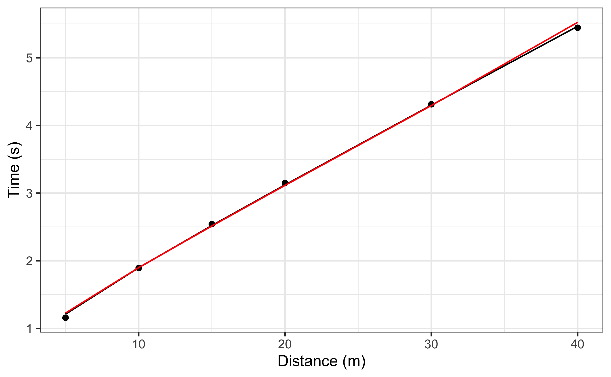

Chapter 18 Appendix B: shorts package

Package short (95) creates short sprint (<6sec) profiles using the split times or the radar gun data. Mono-exponential equation is used to estimate maximal sprinting speed (MSS), relative acceleration (TAU), and other parameters. These parameters can be used to predict kinematic and kinetics variables and to compare individuals.
18.1 shorts Installation
18.2 short Examples
shorts comes with two sample data sets: split_times and radar_gun_data with N=5 athletes. Let’s load them both:
18.2.1 Profiling using split times
To model sprint performance using split times, distance will be used as predictor and time as target. Since split_times contains data for multiple athletes, let’s extract only one athlete and model it using shorts::model_using_splits function.
kimberley_data <- filter(split_times, athlete == "Kimberley")
kimberley_data
#> # A tibble: 6 x 4
#> athlete bodyweight distance time
#> <chr> <dbl> <dbl> <I<dbl>>
#> 1 Kimberley 55 5 1.16
#> 2 Kimberley 55 10 1.89
#> 3 Kimberley 55 15 2.54
#> 4 Kimberley 55 20 3.15
#> 5 Kimberley 55 30 4.31
#> 6 Kimberley 55 40 5.44shorts::model_using_splits returns an object with parameters, model_fit, model returned from stats::nls function and data used to estimate parameters. Parameters estimated using mono-exponential equation are maximal sprinting speed (MSS), and relative acceleration (TAU). Additional parameters computed from MSS and TAU are maximal acceleration (MAC) and maximal relative power (PMAX).
kimberley_profile <- shorts::model_using_splits(
distance = kimberley_data$distance,
time = kimberley_data$time)
kimberley_profile
#> Estimated model parameters
#> --------------------------
#> MSS TAU MAC PMAX
#> 8.5911421 0.8113282 10.5889855 22.7428698
#> time_correction distance_correction
#> 0.0000000 0.0000000
#>
#> Model fit estimators
#> --------------------
#> RSE R_squared minErr maxErr maxAbsErr RMSE MAE MAPE
#> 0.03403413 0.99965531 -0.02699169 0.05293444 0.05293444 0.02778875 0.02333342 1.19263116
summary(kimberley_profile)
#>
#> Formula: corrected_time ~ TAU * I(LambertW::W(-exp(1)^(-distance/(MSS *
#> TAU) - 1))) + distance/MSS + TAU
#>
#> Parameters:
#> Estimate Std. Error t value Pr(>|t|)
#> MSS 8.59114 0.12251 70.13 2.48e-07 ***
#> TAU 0.81133 0.04581 17.71 5.97e-05 ***
#> ---
#> Signif. codes: 0 '***' 0.001 '**' 0.01 '*' 0.05 '.' 0.1 ' ' 1
#>
#> Residual standard error: 0.03403 on 4 degrees of freedom
#>
#> Number of iterations to convergence: 4
#> Achieved convergence tolerance: 4.058e-06
coef(kimberley_profile)
#> MSS TAU MAC PMAX
#> 8.5911421 0.8113282 10.5889855 22.7428698
#> time_correction distance_correction
#> 0.0000000 0.0000000To return the predicted outcome (in this case time variable), use predict function:
If you are interested in calculating average split velocity, use shorts::format_splits
shorts::format_splits(
distance = kimberley_data$distance,
time = kimberley_data$time)
#> split split_distance_start split_distance_stop split_distance split_time_start
#> 1 1 0 5 5 0
#> 2 2 5 10 5 1.158
#> 3 3 10 15 5 1.893
#> 4 4 15 20 5 2.541
#> 5 5 20 30 10 3.149
#> 6 6 30 40 10 4.313
#> split_time_stop split_time split_mean_velocity
#> 1 1.158 1.158 4.317789....
#> 2 1.893 0.735 6.802721....
#> 3 2.541 0.648 7.716049....
#> 4 3.149 0.608 8.223684....
#> 5 4.313 1.164 8.591065....
#> 6 5.444 1.131 8.841732....Let’s plot observed vs fitted split times. For this we can use data returned from shorts::model_using_splits since it contains pred_time column.
ggplot(kimberley_profile$data, aes(x = distance)) +
theme_bw() +
geom_point(aes(y = time)) +
geom_line(aes(y = pred_time)) +
xlab("Distance (m)") +
ylab("Time (s)")
To plot predicted velocity, acceleration, and relative power over distance, use shorts:predict_
kimberley_pred <- tibble(
distance = seq(0, 40, length.out = 1000),
# Velocity
pred_velocity = shorts::predict_velocity_at_distance(
distance,
kimberley_profile$parameters$MSS,
kimberley_profile$parameters$TAU),
# Acceleration
pred_acceleration = shorts::predict_acceleration_at_distance(
distance,
kimberley_profile$parameters$MSS,
kimberley_profile$parameters$TAU),
# Power
pred_power = shorts::predict_relative_power_at_distance(
distance,
kimberley_profile$parameters$MSS,
kimberley_profile$parameters$TAU),
)
# Convert to long
kimberley_pred <- gather(kimberley_pred, "metric", "value", -distance)
ggplot(kimberley_pred, aes(x = distance, y = value)) +
theme_bw() +
geom_line() +
facet_wrap(~metric, scales = "free_y") +
xlab("Distance (m)") +
ylab(NULL)
To do prediction simpler, use shorts::predict_kinematics function. This will provide kinematics for 0-6s sprint using 100Hz.
predicted_kinematics <- predict_kinematics(kimberley_profile)
head(predicted_kinematics)
#> time distance velocity acceleration power
#> 1 0.00 0.0000000000 0.0000000 10.588986 0.000000
#> 2 0.01 0.0005272807 0.1052400 10.459272 1.100733
#> 3 0.02 0.0021005019 0.2091907 10.331148 2.161181
#> 4 0.03 0.0047068510 0.3118682 10.204593 3.182488
#> 5 0.04 0.0083336724 0.4132878 10.079589 4.165771
#> 6 0.05 0.0129684654 0.5134650 9.956116 5.112117To get model residuals, use residuals function:
residuals(kimberley_profile)
#> [1] 0.052934436 0.004021074 -0.019971823 -0.026991691 -0.013756850 0.022324628Package shorts comes with find_ family of functions that allow finding peak power and it’s location, as well as critical distance over which velocity, acceleration, or power drops below certain threshold:
# Peak power and location
shorts::find_max_power_distance(
kimberley_profile$parameters$MSS,
kimberley_profile$parameters$TAU
)
#> $max_power
#> [1] 22.74287
#>
#> $distance
#> [1] 1.346271
# Distance over which power is over 50%
shorts::find_power_critical_distance(
MSS = kimberley_profile$parameters$MSS,
TAU = kimberley_profile$parameters$TAU,
percent = 0.5
)
#> $lower
#> [1] 0.08295615
#>
#> $upper
#> [1] 7.441024
# Distance over which acceleration is under 50%
shorts::find_acceleration_critical_distance(
MSS = kimberley_profile$parameters$MSS,
TAU = kimberley_profile$parameters$TAU,
percent = 0.5
)
#> [1] 1.346279
# Distance over which velocity is over 95%
shorts::find_velocity_critical_distance(
MSS = kimberley_profile$parameters$MSS,
TAU = kimberley_profile$parameters$TAU,
percent = 0.95
)
#> [1] 14.2592218.2.1.1 Mixed-effect models
Each individual can be modeled separately, or we can perform non-linear mixed model using nlme function from nlme package (Pinheiro et al., 2019). This is done using shorts::mixed_model_using_splits:
mixed_model <- shorts::mixed_model_using_splits(
data = split_times,
distance = "distance",
time = "time",
athlete = "athlete"
)
mixed_model
#> Estimated fixed model parameters
#> --------------------------------
#> MSS TAU MAC PMAX
#> 8.0649112 0.6551988 12.3091052 24.8179600
#> time_correction distance_correction
#> 0.0000000 0.0000000
#>
#> Estimated frandom model parameters
#> ----------------------------------
#> athlete MSS TAU MAC PMAX time_correction distance_correction
#> 1 James 9.691736 0.8469741 11.44278 27.72510 0 0
#> 2 Jim 7.833622 0.5048535 15.51663 30.38785 0 0
#> 3 John 7.780395 0.7274302 10.69573 20.80424 0 0
#> 4 Kimberley 8.569518 0.8022235 10.68221 22.88535 0 0
#> 5 Samantha 6.449284 0.3945129 16.34746 26.35735 0 0
#>
#> Model fit estimators
#> --------------------
#> RSE R_squared minErr maxErr maxAbsErr RMSE MAE MAPE
#> 0.02600213 0.99982036 -0.02934519 0.04964582 0.04964582 0.02139178 0.01722581 0.90185579
summary(mixed_model)
#> Nonlinear mixed-effects model fit by maximum likelihood
#> Model: corrected_time ~ TAU * I(LambertW::W(-exp(1)^(-distance/(MSS * TAU) - 1))) + distance/MSS + TAU
#> Data: train
#> AIC BIC logLik
#> -75.06719 -66.66001 43.5336
#>
#> Random effects:
#> Formula: list(MSS ~ 1, TAU ~ 1)
#> Level: athlete
#> Structure: General positive-definite, Log-Cholesky parametrization
#> StdDev Corr
#> MSS 1.06581655 MSS
#> TAU 0.17821114 0.877
#> Residual 0.02600213
#>
#> Fixed effects: MSS + TAU ~ 1
#> Value Std.Error DF t-value p-value
#> MSS 8.064911 0.4949104 24 16.295699 0
#> TAU 0.655199 0.0837593 24 7.822404 0
#> Correlation:
#> MSS
#> TAU 0.874
#>
#> Standardized Within-Group Residuals:
#> Min Q1 Med Q3 Max
#> -1.9092981 -0.6050683 0.1536529 0.5226467 1.1285687
#>
#> Number of Observations: 30
#> Number of Groups: 5
coef(mixed_model)
#> $fixed
#> MSS TAU MAC PMAX
#> 8.0649112 0.6551988 12.3091052 24.8179600
#> time_correction distance_correction
#> 0.0000000 0.0000000
#>
#> $random
#> athlete MSS TAU MAC PMAX time_correction distance_correction
#> 1 James 9.691736 0.8469741 11.44278 27.72510 0 0
#> 2 Jim 7.833622 0.5048535 15.51663 30.38785 0 0
#> 3 John 7.780395 0.7274302 10.69573 20.80424 0 0
#> 4 Kimberley 8.569518 0.8022235 10.68221 22.88535 0 0
#> 5 Samantha 6.449284 0.3945129 16.34746 26.35735 0 0shorts::mixed_model_using_splits return the similar object, but parameters contain two elements: fixed and random.
Let’s plot predicted velocity over distance for athletes in the split_times data set:
velocity_over_distance <- merge(
mixed_model$parameters$random,
data.frame(distance = seq(0, 40, length.out = 1000))
)
velocity_over_distance$pred_velocity <- with(velocity_over_distance,
shorts::predict_velocity_at_distance(
distance = distance,
MSS = MSS,
TAU = TAU)
)
ggplot(velocity_over_distance, aes(x = distance, y = pred_velocity, color = athlete)) +
theme_bw() +
geom_line() +
xlab("Distance (m)") +
ylab("Predicted velocity (m/s)")
To modify random effects, which are by default MSS and TAU (MSS + TAU ~ 1), use the random parameter. For example, we can assume same TAU for all athletes and only use MSS as random effect:
mixed_model <- shorts::mixed_model_using_splits(
data = split_times,
distance = "distance",
time = "time",
athlete = "athlete",
random = MSS ~ 1
)
mixed_model
#> Estimated fixed model parameters
#> --------------------------------
#> MSS TAU MAC PMAX
#> 7.9366665 0.6277251 12.6435385 25.0868872
#> time_correction distance_correction
#> 0.0000000 0.0000000
#>
#> Estimated frandom model parameters
#> ----------------------------------
#> athlete MSS TAU MAC PMAX time_correction distance_correction
#> 1 James 9.021822 0.6277251 14.37225 32.41597 0 0
#> 2 Jim 8.111530 0.6277251 12.92211 26.20451 0 0
#> 3 John 7.576142 0.6277251 12.06920 22.85950 0 0
#> 4 Kimberley 8.144414 0.6277251 12.97449 26.41741 0 0
#> 5 Samantha 6.829424 0.6277251 10.87964 18.57542 0 0
#>
#> Model fit estimators
#> --------------------
#> RSE R_squared minErr maxErr maxAbsErr RMSE MAE MAPE
#> 0.07635631 0.99801628 -0.10228573 0.15987989 0.15987989 0.06979851 0.05845303 2.6855563918.2.2 Profiling using radar gun data
The radar gun data is modeled using measured velocity as target variable and time as predictor. Individual analysis is performed using shorts::model_using_radar function. Let’s do analysis for Jim:
jim_data <- filter(radar_gun_data, athlete == "Jim")
jim_profile <- shorts::model_using_radar(
time = jim_data$time,
velocity = jim_data$velocity
)
jim_profile
#> Estimated model parameters
#> --------------------------
#> MSS TAU MAC PMAX
#> 7.9979331 0.8886595 8.9999977 17.9953449
#> time_correction distance_correction
#> 0.0000000 0.0000000
#>
#> Model fit estimators
#> --------------------
#> RSE R_squared minErr maxErr maxAbsErr RMSE MAE MAPE
#> 0.05058726 0.99924408 -0.15099212 0.16415830 0.16415830 0.05050288 0.03927901 NaN
summary(jim_profile)
#>
#> Formula: velocity ~ MSS * (1 - exp(1)^(-(corrected_time)/TAU))
#>
#> Parameters:
#> Estimate Std. Error t value Pr(>|t|)
#> MSS 7.997933 0.003069 2606.3 <2e-16 ***
#> TAU 0.888659 0.001564 568.2 <2e-16 ***
#> ---
#> Signif. codes: 0 '***' 0.001 '**' 0.01 '*' 0.05 '.' 0.1 ' ' 1
#>
#> Residual standard error: 0.05059 on 598 degrees of freedom
#>
#> Number of iterations to convergence: 3
#> Achieved convergence tolerance: 9.313e-07The object returned from shorts::model_using_radar is same as object returned from shorts::model_using_splits. Let’s plot Jim’s measured velocity and predicted velocity:
ggplot(jim_profile$data, aes(x = time)) +
theme_bw() +
geom_line(aes(y = velocity), alpha = 0.5) +
geom_line(aes(y = pred_velocity), color = "red", alpha = 0.5) +
xlab("Time (s)") +
ylab("Velocity (m/s)")
Radar gun data can be modeled individually or using non-linear mixed model implemented in shorts::mixed_model_using_radar:
mixed_model <- shorts::mixed_model_using_radar(
data = radar_gun_data,
time = "time",
velocity = "velocity",
athlete = "athlete"
)
mixed_model
#> Estimated fixed model parameters
#> --------------------------------
#> MSS TAU MAC PMAX
#> 8.301178 1.007782 8.237080 17.094367
#> time_correction distance_correction
#> 0.000000 0.000000
#>
#> Estimated frandom model parameters
#> ----------------------------------
#> athlete MSS TAU MAC PMAX time_correction distance_correction
#> 1 James 9.998556 1.1108457 9.000851 22.49888 0 0
#> 2 Jim 7.997945 0.8886712 8.999892 17.99516 0 0
#> 3 John 8.000051 1.0690357 7.483427 14.96695 0 0
#> 4 Kimberley 9.005500 1.2855706 7.005061 15.77102 0 0
#> 5 Samantha 6.503839 0.6847851 9.497635 15.44277 0 0
#>
#> Model fit estimators
#> --------------------
#> RSE R_squared minErr maxErr maxAbsErr RMSE MAE MAPE
#> 0.05164818 0.99942171 -0.21912952 0.19832897 0.21912952 0.05156203 0.03949473 NaN
summary(mixed_model)
#> Nonlinear mixed-effects model fit by maximum likelihood
#> Model: velocity ~ MSS * (1 - exp(1)^(-(corrected_time)/TAU))
#> Data: train
#> AIC BIC logLik
#> -9150.177 -9114.139 4581.089
#>
#> Random effects:
#> Formula: list(MSS ~ 1, TAU ~ 1)
#> Level: athlete
#> Structure: General positive-definite, Log-Cholesky parametrization
#> StdDev Corr
#> MSS 1.16535852 MSS
#> TAU 0.20497379 0.811
#> Residual 0.05164818
#>
#> Fixed effects: MSS + TAU ~ 1
#> Value Std.Error DF t-value p-value
#> MSS 8.301178 0.5213403 2994 15.92276 0
#> TAU 1.007782 0.0917011 2994 10.98986 0
#> Correlation:
#> MSS
#> TAU 0.811
#>
#> Standardized Within-Group Residuals:
#> Min Q1 Med Q3 Max
#> -3.8399995748 -0.5932967650 -0.0002562518 0.6111624765 4.2427350284
#>
#> Number of Observations: 3000
#> Number of Groups: 5Let’s plot predicted acceleration over time (0-6sec) for athletes in the radar_gun_data data set:
model_predictions <- shorts::predict_kinematics(mixed_model)
ggplot(model_predictions, aes(x = time, y = acceleration, color = athlete)) +
theme_bw() +
geom_line() +
xlab("Time (s)") +
ylab("Predicted acceleration (m/s^2)")
18.2.3 Using corrections
You have probably noticed that estimated MSS and TAU were a bit too high for splits data. Biased estimates are due to differences in starting positions and timing triggering methods for certain measurement approaches (e.g. starting behind first timing gate, or allowing for body rocking). This topic is further explained in sprint-corrections vignette that can be accessed by typing:
Here I will provide quick summary. Often, this bias in estimates is dealt with by using heuristic rule of thumb of adding time_correction to split times (e.g. from 0.3-0.5sec; see more in Haugen et al., 2012). This functionality is available in all covered shorts functions:
mixed_model_corrected <- shorts::mixed_model_using_splits(
data = split_times,
distance = "distance",
time = "time",
athlete = "athlete",
time_correction = 0.3
)
mixed_model_corrected
#> Estimated fixed model parameters
#> --------------------------------
#> MSS TAU MAC PMAX
#> 8.474621 1.154940 7.337715 15.546088
#> time_correction distance_correction
#> 0.300000 0.000000
#>
#> Estimated frandom model parameters
#> ----------------------------------
#> athlete MSS TAU MAC PMAX time_correction distance_correction
#> 1 James 10.549314 1.4953619 7.054689 18.60553 0.3 0
#> 2 Jim 8.048378 0.9216038 8.733012 17.57165 0.3 0
#> 3 John 8.130968 1.2295728 6.612839 13.44220 0.3 0
#> 4 Kimberley 9.114979 1.3721302 6.642940 15.13756 0.3 0
#> 5 Samantha 6.529465 0.7560310 8.636504 14.09794 0.3 0
#>
#> Model fit estimators
#> --------------------
#> RSE R_squared minErr maxErr maxAbsErr RMSE MAE
#> 0.015195052 0.999941466 -0.041155421 0.020298042 0.041155421 0.012443740 0.009087699
#> MAPE
#> 0.496822694
summary(mixed_model_corrected)
#> Nonlinear mixed-effects model fit by maximum likelihood
#> Model: corrected_time ~ TAU * I(LambertW::W(-exp(1)^(-distance/(MSS * TAU) - 1))) + distance/MSS + TAU
#> Data: train
#> AIC BIC logLik
#> -96.92355 -88.51636 54.46177
#>
#> Random effects:
#> Formula: list(MSS ~ 1, TAU ~ 1)
#> Level: athlete
#> Structure: General positive-definite, Log-Cholesky parametrization
#> StdDev Corr
#> MSS 1.32853982 MSS
#> TAU 0.27791928 0.924
#> Residual 0.01519505
#>
#> Fixed effects: MSS + TAU ~ 1
#> Value Std.Error DF t-value p-value
#> MSS 8.474621 0.6159646 24 13.758292 0
#> TAU 1.154940 0.1293310 24 8.930112 0
#> Correlation:
#> MSS
#> TAU 0.923
#>
#> Standardized Within-Group Residuals:
#> Min Q1 Med Q3 Max
#> -1.3358323 -0.4066588 -0.1325837 0.3284514 2.7084751
#>
#> Number of Observations: 30
#> Number of Groups: 5And time_correction can also be used in predict_ and find_ family of functions:
velocity_over_distance_corrected <- merge(
mixed_model_corrected$parameters$random,
data.frame(distance = seq(0, 40, length.out = 1000))
)
velocity_over_distance_corrected$pred_velocity <- with(velocity_over_distance,
shorts::predict_velocity_at_distance(
distance = distance,
MSS = MSS,
TAU = TAU,
time_correction = 0.3)
)
ggplot(velocity_over_distance_corrected, aes(x = distance, y = pred_velocity, color = athlete)) +
theme_bw() +
geom_line() +
xlab("Distance (m)") +
ylab("Predicted velocity (m/s)")
Instead of providing for time_correction, this parameter can be estimated using shorts::model_using_splits_with_time_correction and shorts::mixed_model_using_splits_with_time_correction:
kimberley_profile_with_time_correction <- shorts::model_using_splits_with_time_correction(
distance = kimberley_data$distance,
time = kimberley_data$time)
kimberley_profile_with_time_correction
#> Estimated model parameters
#> --------------------------
#> MSS TAU MAC PMAX
#> 8.9748353 1.2348565 7.2679175 16.3070907
#> time_correction distance_correction
#> 0.2346537 0.0000000
#>
#> Model fit estimators
#> --------------------
#> RSE R_squared minErr maxErr maxAbsErr RMSE
#> 0.0011290466 0.9999996942 -0.0012094658 0.0011807342 0.0012094658 0.0007983565
#> MAE MAPE
#> 0.0006586035 0.0282352643
# Mixed-effect model using `time_correction` as fixed effect only
# To use `time_correction` as random effects, use random = MSS + TAU + time_correction ~ 1
mixed_model_with_time_correction <- shorts::mixed_model_using_splits_with_time_correction(
data = split_times,
distance = "distance",
time = "time",
athlete = "athlete"
)
# Parameters
mixed_model_with_time_correction
#> Estimated fixed model parameters
#> --------------------------------
#> MSS TAU MAC PMAX
#> 8.3040140 0.9687348 8.5720197 17.7955429
#> time_correction distance_correction
#> 0.1989677 0.0000000
#>
#> Estimated frandom model parameters
#> ----------------------------------
#> athlete MSS TAU MAC PMAX time_correction distance_correction
#> 1 James 10.186327 1.2429367 8.195370 20.87018 0.1989677 0
#> 2 Jim 7.946099 0.7643674 10.395655 20.65123 0.1989677 0
#> 3 John 7.996262 1.0488272 7.624003 15.24088 0.1989677 0
#> 4 Kimberley 8.899472 1.1615147 7.661953 17.04683 0.1989677 0
#> 5 Samantha 6.491911 0.6260282 10.369998 16.83028 0.1989677 0
#>
#> Model fit estimators
#> --------------------
#> RSE R_squared minErr maxErr maxAbsErr RMSE MAE
#> 0.005976815 0.999990286 -0.016508275 0.009370607 0.016508275 0.004882226 0.003481096
#> MAPE
#> 0.186135567For more details, please refer to sprint-corrections vignette.
18.2.4 Leave-One-Out Cross-Validation (LOOCV)
...model_using_splits.. family of functions come with LOOCV feature that is performed by setting the function parameter LOOCV = TRUE. This feature is very useful for checking model parameters robustness and model predictions on unseen data. LOOCV involve iterative model building and testing by removing observation one by one and making predictions for them. Let’s use Kimberly again, but this time perform LOOCV:
kimberley_profile_LOOCV <- shorts::model_using_splits(
distance = kimberley_data$distance,
time = kimberley_data$time,
LOOCV = TRUE)
kimberley_profile_LOOCV
#> Estimated model parameters
#> --------------------------
#> MSS TAU MAC PMAX
#> 8.5911421 0.8113282 10.5889855 22.7428698
#> time_correction distance_correction
#> 0.0000000 0.0000000
#>
#> Model fit estimators
#> --------------------
#> RSE R_squared minErr maxErr maxAbsErr RMSE MAE MAPE
#> 0.03403413 0.99965531 -0.02699169 0.05293444 0.05293444 0.02778875 0.02333342 1.19263116
#>
#>
#> Leave-One-Out Cross-Validation
#> ------------------------------
#> Parameters:
#> MSS TAU MAC PMAX time_correction distance_correction
#> 1 8.693799 0.8561004 10.15512 22.07164 0 0
#> 2 8.599598 0.8152654 10.54822 22.67761 0 0
#> 3 8.560665 0.7953644 10.76320 23.03504 0 0
#> 4 8.571599 0.7972996 10.75079 23.03786 0 0
#> 5 8.608051 0.8130138 10.58783 22.78514 0 0
#> 6 8.394673 0.7596923 11.05010 23.19049 0 0
#>
#> Model fit:
#> RSE R_squared minErr maxErr maxAbsErr RMSE MAE MAPE
#> NA 0.99901083 -0.03444984 0.08009048 0.08009048 0.04742769 0.03923869 1.72270273Box-plot is suitable method for plotting estimated parameters:
LOOCV_parameters <- gather(kimberley_profile_LOOCV$LOOCV$parameters) %>%
mutate(key = factor(
key,
levels = c("MSS", "TAU", "MAC", "PMAX", "time_correction", "distance_correction")
))
ggplot(LOOCV_parameters, aes(y = value)) +
theme_bw() +
geom_boxplot() +
facet_wrap(~key, scales = "free") +
ylab(NULL) +
theme(axis.ticks.x = element_blank(), axis.text.x = element_blank())
Let’s plot model LOOCV predictions and training (when using all data set) predictions against observed performance:
kimberley_data <- kimberley_data %>%
mutate(
pred_time = predict(kimberley_profile_LOOCV),
LOOCV_time = kimberley_profile_LOOCV$LOOCV$data$pred_time
)
ggplot(kimberley_data, aes(x = distance)) +
theme_bw() +
geom_point(aes(y = time)) +
geom_line(aes(y = pred_time), color = "black") +
geom_line(aes(y = LOOCV_time), color = "red") +
xlab("Distance (m)") +
ylab("Time (s)")
Let’s plot predicted velocity using LOOCV estimate parameters to check robustness of the model predictions:
plot_data <- kimberley_profile_LOOCV$LOOCV$parameters %>%
mutate(LOOCV = row_number())
plot_data <- expand_grid(
data.frame(time = seq(0, 6, length.out = 100)),
plot_data
) %>%
mutate(
LOOCV_velocity = predict_velocity_at_time(
time = time,
MSS = MSS,
TAU = TAU),
velocity = predict_velocity_at_time(
time = time,
MSS = kimberley_profile_LOOCV$parameters$MSS,
TAU = kimberley_profile_LOOCV$parameters$TAU)
)
ggplot(plot_data, aes(x = time, y = LOOCV_velocity, group = LOOCV)) +
theme_bw() +
geom_line(alpha = 0.8) +
geom_line(aes(y = velocity), color = "red", size = 0.5) +
xlab("Time (sec)") +
ylab("Velocity (m/s)")
References
95. Jovanovic, M. shorts: Short sprints., 2020.Available from: https://mladenjovanovic.github.io/shorts/